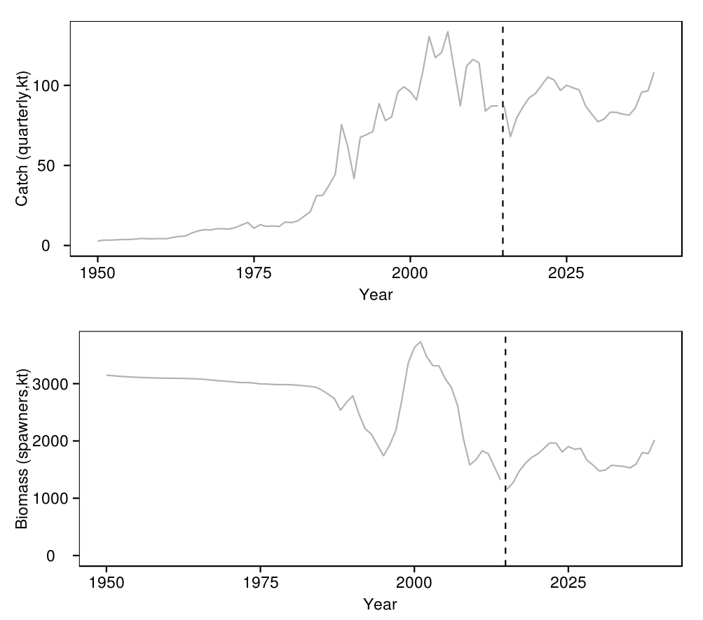
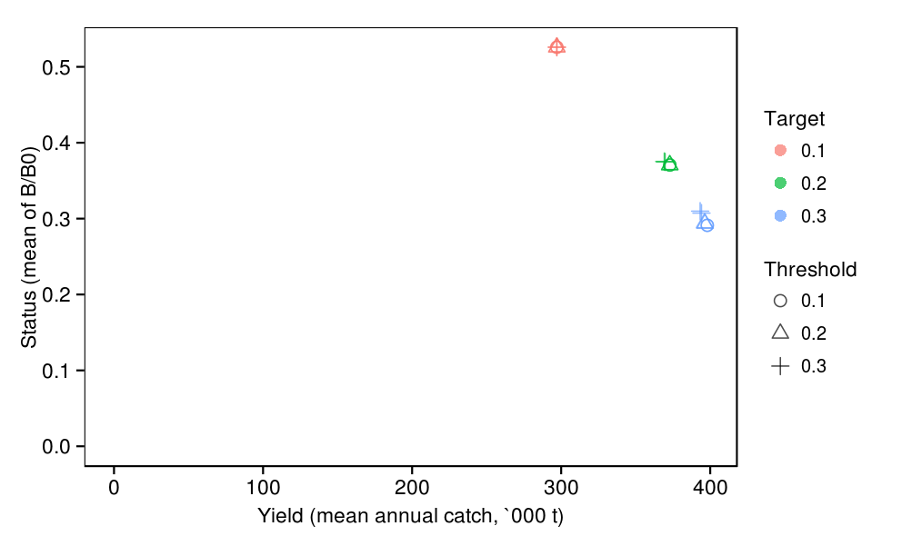
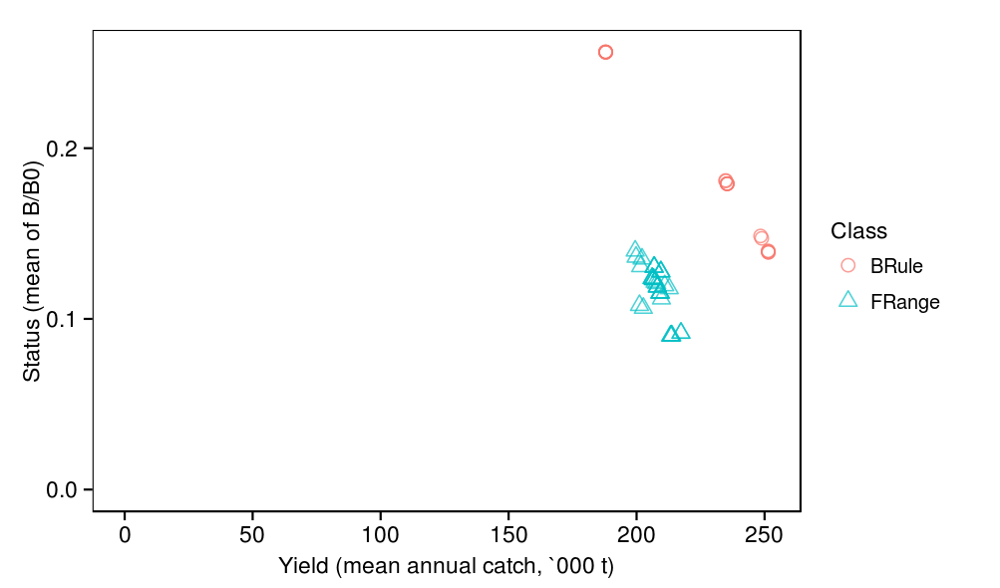
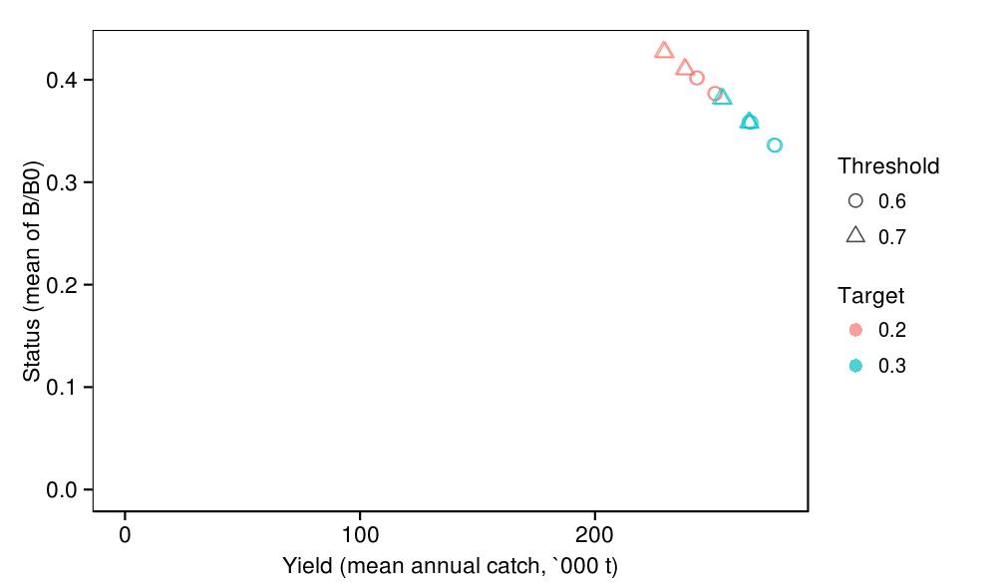
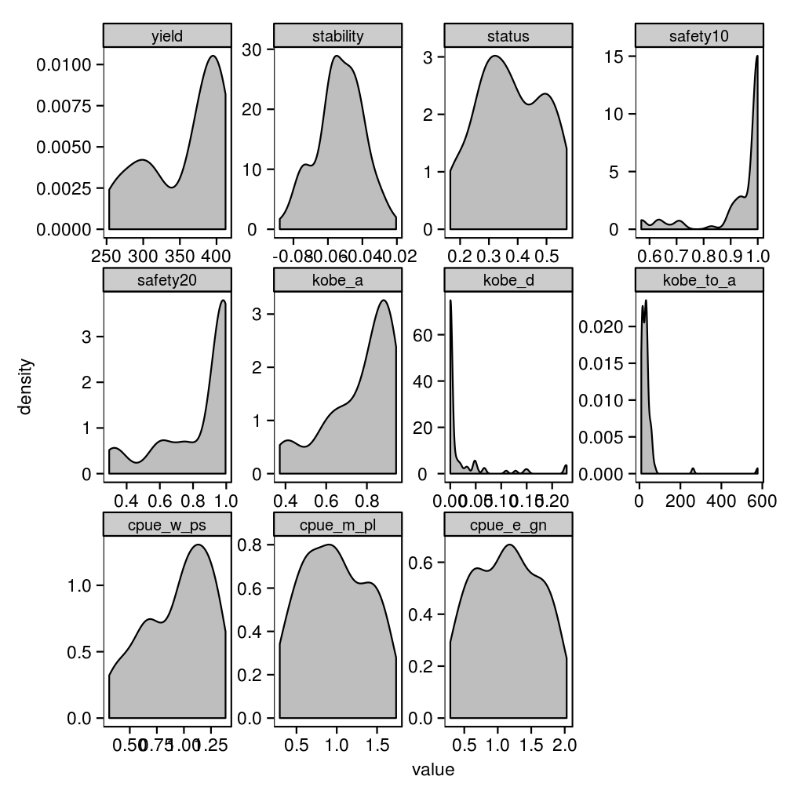

Indian Ocean skipjack model : management procedure evaluations
DRAFT
This documentation is a draft under active development. As such, it may not exactly mirror what is in the current version of the code. Separate documentation, generated from the model's C++ source code, is also available .
source('../../common.R',local=T)
# Load in model outputs
load(c(
'procedures',
'samples',
'performances',
'track'
),from='../output')
# Calculate performance statistics from performance measures
perfs <- ddply(performances,.(procedure),summarise,
yield = mean(catches_total)/1000*4,
stability = -mean(catches_mapc),
status = mean(status_mean),
safety10 = 1-mean(status_b10),
safety20 = 1-mean(status_b20),
cpue_w_ps = mean(cpue_mean_w_ps),
cpue_m_pl = mean(cpue_mean_m_pl),
cpue_e_gn = mean(cpue_mean_e_gn)
)
# List of names of performance statistics
stats <- c('yield','stability','status','safety10','safety20','cpue_w_ps','cpue_m_pl','cpue_e_gn')
# Merge in procedures to facilitate summaries by procedure parameters
perfs <- merge(procedures,perfs)
# Augment track
track <- within(track,{
procedure <- factor(procedure)
})
# Plot of tradeoff between two performance statistics
plot_tradeoff <- function(data,x,y,colour,shape){
data <- within(data,{
x = data[,names(x)]
y = data[,names(y)]
colour = factor(data[,names(colour)])
shape = factor(data[,names(shape)])
})
print(
ggplot(data,aes(x=x,y=y,colour=colour,shape=shape)) +
geom_point(size=3,alpha=0.7) +
geom_vline(x=0,alpha=0) +
geom_hline(y=0,alpha=0) +
scale_shape_manual(values=1:10) +
labs(x=x[[1]],y=y[[1]],colour=colour[[1]],shape=shape[[1]])
)
}
print( ggplot(subset(track,replicate<4 & quarter==0),aes(x=year+quarter/4,y=biomass_spawning_overall/1e6)) + geom_line(aes(colour=procedure)) + facet_wrap(~replicate,scales='free_y') + geom_vline(x=2015,linetype=2) + labs(x="Year",y="Spawning biomass (mil. t)") + theme(legend.position='none') )
print( ggplot(melt(perfs[,stats]),aes(x=value)) + geom_density(fill='grey') + facet_wrap(~variable,scales='free') )

print( ggplot(perfs,aes(x=cpue_w_ps,y=cpue_m_pl)) + geom_point() + geom_abline(linetype=3) )
plot_tradeoff( perfs, x = list(yield='Yield (mean annual catch, `000 t)'), y = list(status='Status (mean of B/B0)'), colour = list(class='Class'), shape = list(class='Class') )
plot_tradeoff( subset(perfs,class=="BRule"), x = list(yield='Yield (mean annual catch, `000 t)'), y = list(status='Status (mean of B/B0)'), colour = list(p2='Target'), shape = list(p3='Threshold') )
plot_tradeoff( subset(perfs,class=="FRange"), x = list(yield='Yield (mean annual catch, `000 t)'), y = list(status='Status (mean of B/B0)'), colour = list(p3='Target'), shape = list(p4='Buffer') )